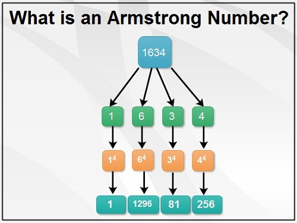
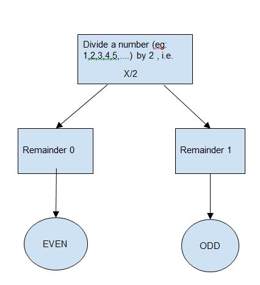
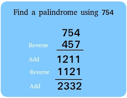

Introduction
An Armstrong number (also known as a Narcissistic number, Pluperfect Digital Invariant (PPDI)) is a number where the sum of its own digits, each raised to the power of the number of digits, equals the number itself..
Example: 153 → 1 3 + 5 3 + 3 3 = 153 1 3 +5 3 +3 3 =153 ✅ (Armstrong number) 9474 → 9 4 + 4 4 + 7 4 + 4 4 = 9474 9 4 +4 4 +7 4 +4 4 =9474 ✅ 123 → 1 3 + 2 3 + 3 3 = 36 1 3 +2 3 +3 3 =36 ❌ (Not an Armstrong number)
Introduction
Examples: 4 → 4 % 2 == 0 ✅ (Even)
7 → 7 % 2 == 1 ❌ (Odd)
10 → 10 % 2 == 0 ✅ (Even)
Introduction
The isOdd method is used to check whether a given number is odd or not. It returns a Boolean value (true or false), depending on whether the number is not divisible by 2.
🔹 What is an Odd Number?
A number is odd if it is not divisible by 2 (i.e., number % 2 != 0).
Examples:
3 → 3 % 2 == 1 ✅ (Odd)
8 → 8 % 2 == 0 ❌ (Even)
15 → 15 % 2 == 1 ✅ (Odd)

Introduction
The isPalindrome method is used to check whether a given string or number is a palindrome. It returns a Boolean value (true or false), indicating whether the input reads the same forward and backward.
🔹 What is a Palindrome?
A palindrome is a word, phrase, number, or sequence that remains the same when reversed.
Examples:
✅ Palindromes:
"madam" → Reversed: "madam" ✅
"racecar" → Reversed: "racecar" ✅
121 → Reversed: 121 ✅
❌ Not Palindromes:
"hello" → Reversed: "olleh" ❌
1234 → Reversed: 4321 ❌.

Introduction
The isPerfect method is used to check whether a given number is a perfect number. It returns a Boolean value (true or false), indicating whether the sum of its proper divisors (excluding itself) is equal to the number.
🔹 What is a Perfect Number?
A perfect number is a positive integer that is equal to the sum of its proper divisors (factors excluding the number itself).